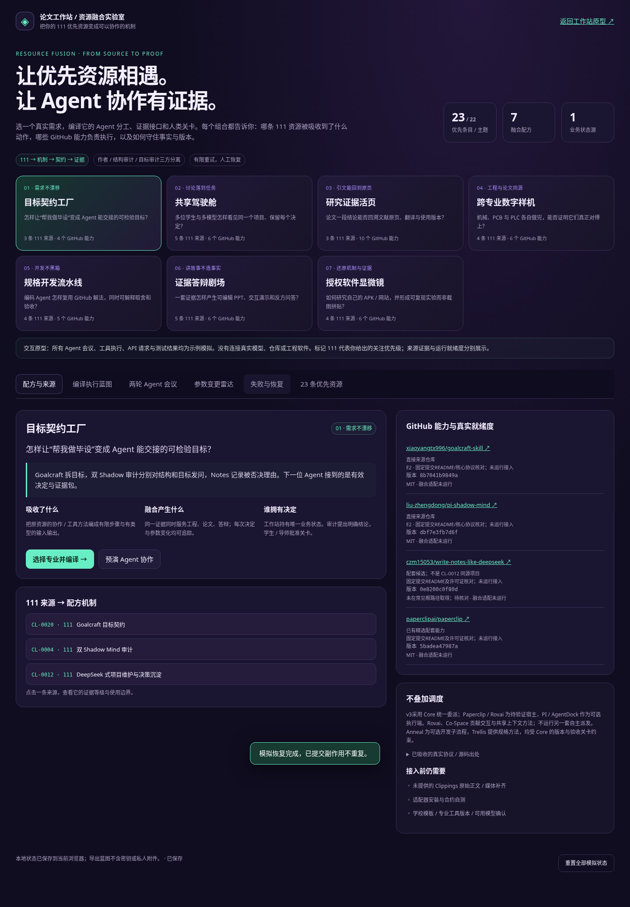

依据原8份附件与新增34页工具链讨论；保留884条索引，整合96岗位、215节点、12套队伍、12套章节和69类成果。
选择专业与组合 → 编译协作蓝图 → 双审计 → 变更联动 → 故障恢复
一个控制中心；资源、任务流转、审查与开发批次统一，已有本机可运行核心。
真实FastAPI、SQLite、文件哈希与Archify；14项控制面测试和8项浏览器检查通过。
23条记录、22主题；每份资源对应具体岗位、交接、检查与采用缺口。
组合编译、统一状态、双影子、版本证据、局部更新和人工恢复三视图。
保留原有项目流程，新增111资源入口、重点筛选和融合架构。
23条均有对应位置，14个补充仓库固定核对、12条协议落实到设计。
Archify实际生成；前端、控制面、执行器、文件、证据、网关与模型API。
点击节点看职责与交接；有限API切换与人工业务恢复分开。
35项精选组合、884项全量索引；写明接口、适配范围、许可证与验证。
多Agent契约、开源复用、首版范围、实施阶段、成本假设与待确认项。
融合方案PDF 融合方案Word 融合架构PDF 方案PDF 方案Word 架构PDF 资源与使用说明

解压后保持文件同目录，用现代浏览器打开本页。原型不需要模型密钥、npm或网络。你可以在原型右上角评分并导出评估JSON。